\(\overrightarrow{v}\) が二次元ベクトルのとき、\(2\) つの実数 \(a,b\) を用いて \(\overrightarrow{v} = (a,b) \) と表記できます。
\(a\) のことを \(x\) 成分、\(b\) のことを \(y\) 成分と呼び、直感的に説明すると、これらの成分は二次元平面上での移動方向と距離を表します。
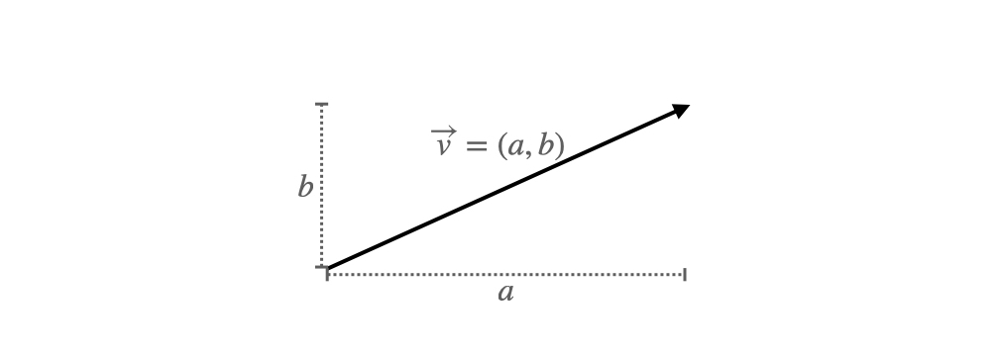
また、ある \(2\) 点を結ぶベクトルの成分は、終端の座標から始点の座標を引いたものです。
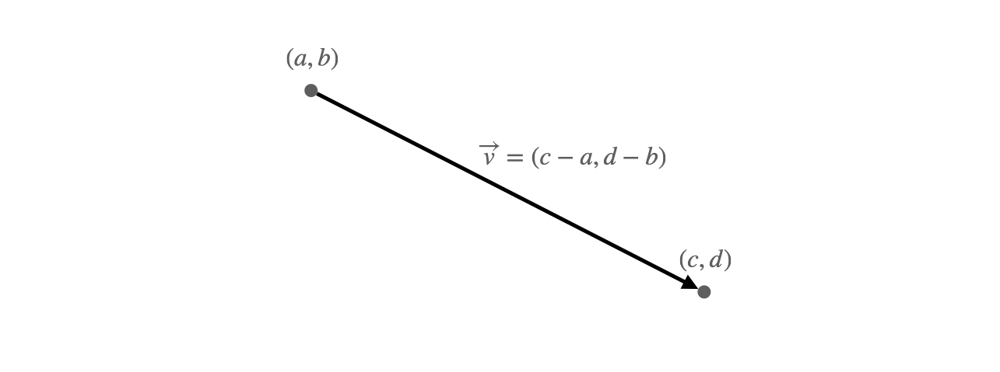
特に、始点が原点 \((0,0)\) であるベクトルを位置ベクトルと言います。
ある \(3\) 点 \(A,B,C\) に対して、点 \(B\) から見て \(A\rightarrow C\) が Counter Clockwise であるということを以下で定義します。
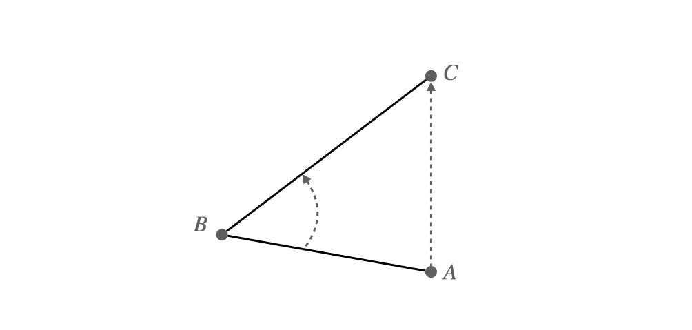
符号付き面積の定義から天下り的に ccw の判定を説明します。線分 \(BA\) が通る領域について、符号付き面積 \(S\prime\) を以下で定義します。\(BA\) が通る領域の面積を \(S\) とします。
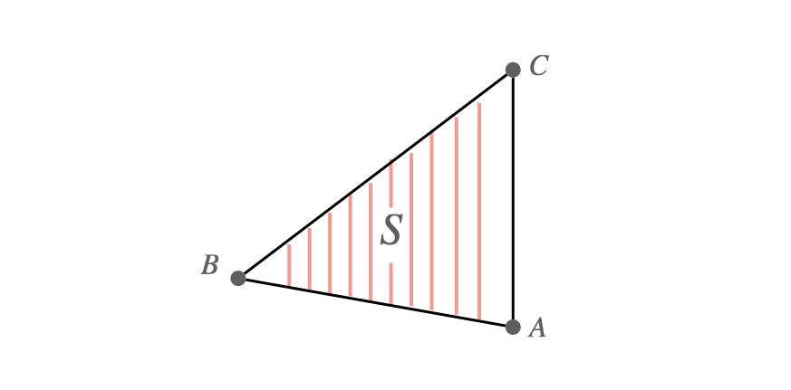
線分 \(BA\) が通る領域の符号付き面積 \(S\prime\) は、\(2\) つのベクトル \(\overrightarrow{BA},\overrightarrow{BC}\) を並べた \(2\times 2\) 行列の行列式を \(2\) で割ったものです。
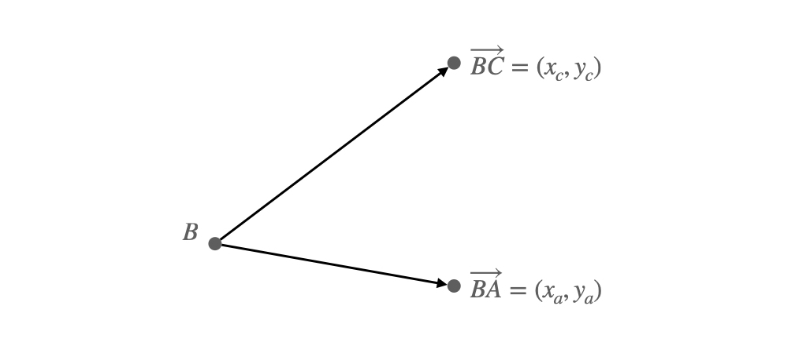
よって \(2\times S\prime = {y_c}{x_a} - {y_a}{x_c}\) です。ccw の判定では \(S\prime\) の符号にしか興味がないので、\(2\times S\prime\) の符号を調べることで \(A\rightarrow C\) が ccw かどうか判別することができます。
符号付き面積の \(2\) 倍を調べることで、座標が整数の場合に誤差を出さずに ccw の判定ができて嬉しいです。
\(G\) を二次元座標上の点からなる集合とします。
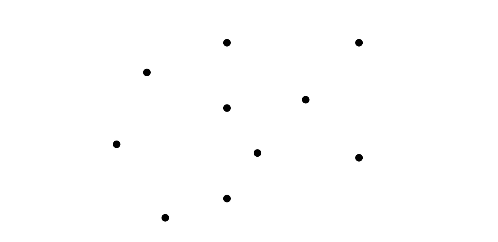
\(G\) に対して、凸包を以下で定義します。
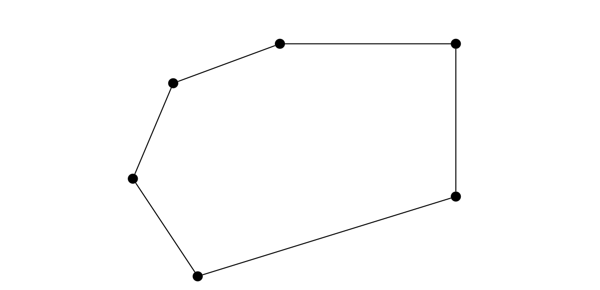
この時、凸包の各頂点は \(G\) に属する点のいずれかです。逆に、これらの点を計算することが凸包を計算することと言えます。場面によっては、凸包の辺上の点を計算する場合もありますが、本質的な違いはありません。
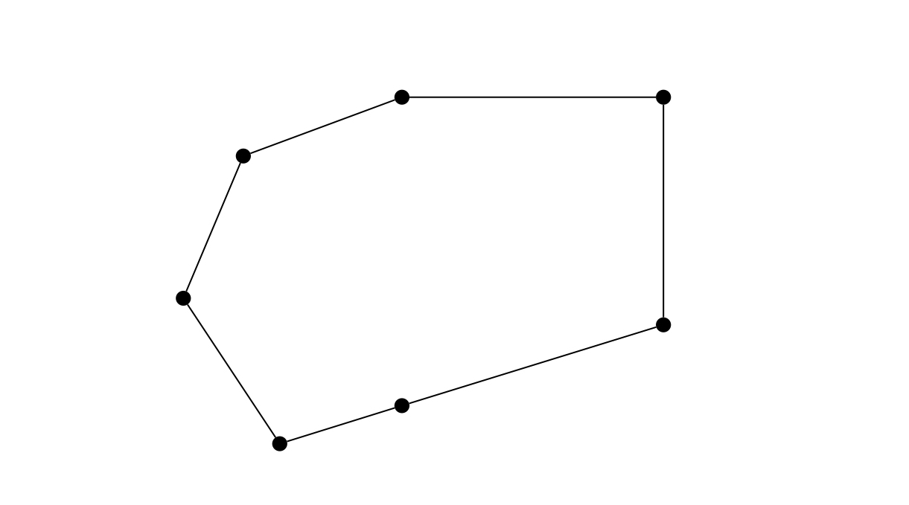
凸包の下半分の頂点をなす点 \(H_1,H_2,H_3,\dots\) を求めるアルゴリズムです。手続きを以下にまとめます。
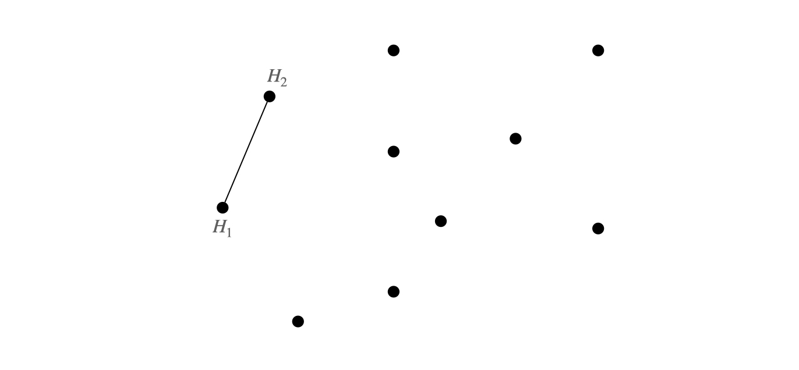
はじめ、候補 \(H\) には辞書順で先頭の \(2\) 点が順に格納されています。その後、残りの点を候補 \(H\) に追加していく手続きに移ります。
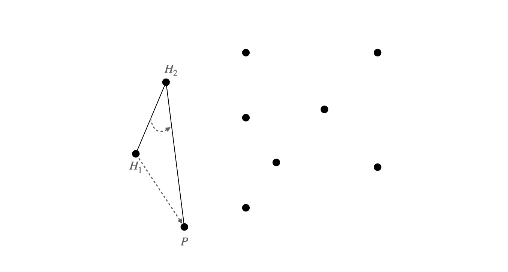
このとき、調べた点 \(P\) を候補 \(H\) に追加する前に、\(H\) の点のうち、この時点で凸包をなし得ない点を、直近に追加されたものから順に pop していきます。
\(H\) の末尾の要素 \(H\prime\) は、以下が成り立つ場合は凸包に含まれません。
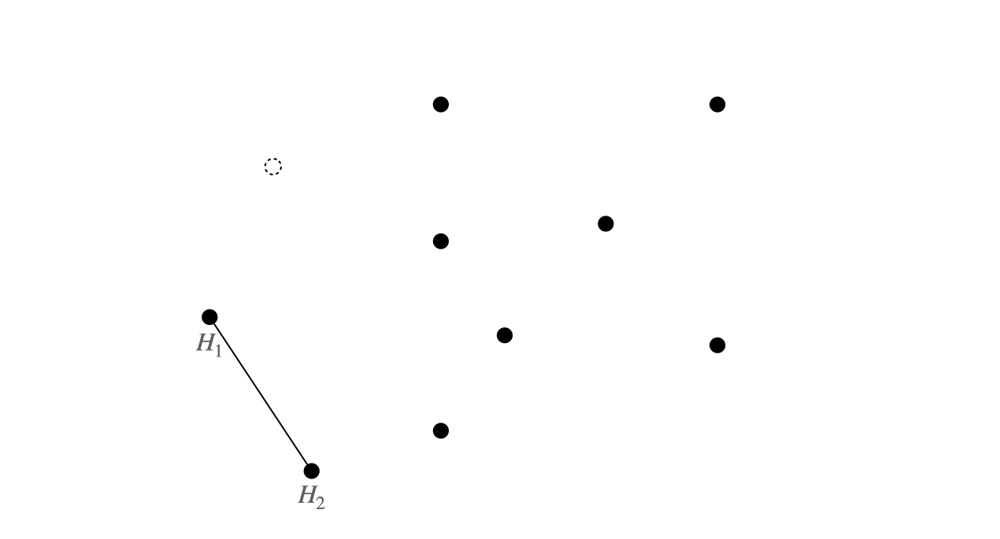
次のステップでは候補 \(H\) からどの点も除外する必要はありません。
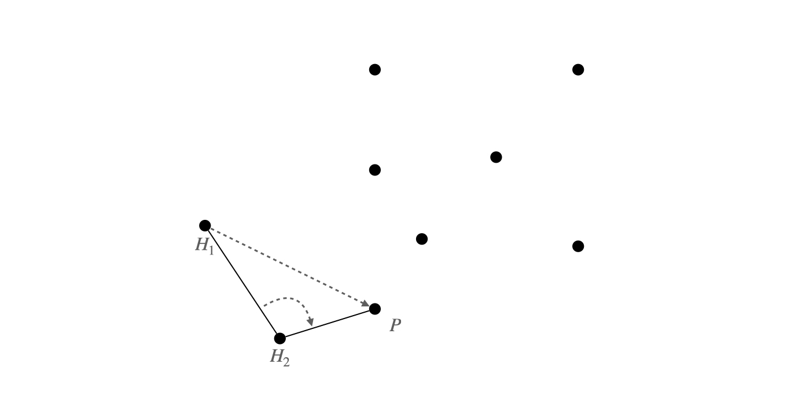
ここで、図の \(H_1 \rightarrow P\) の軌跡が \(H_2\) を軸として見て時計回りであることも確認できます。
同じ手続きで、\(H_4,H_5\) を追加していきます。
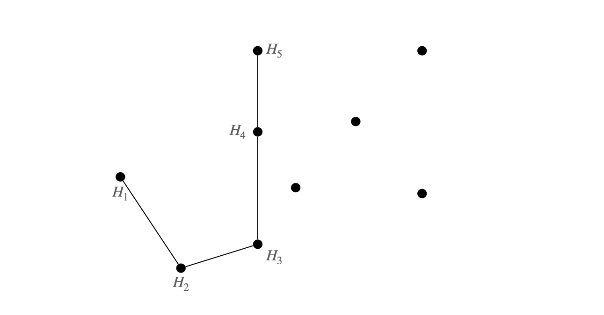
次に \(H_6\) を追加すると、凸包の頂点に成り得ない点が \(H\) から pop されます。
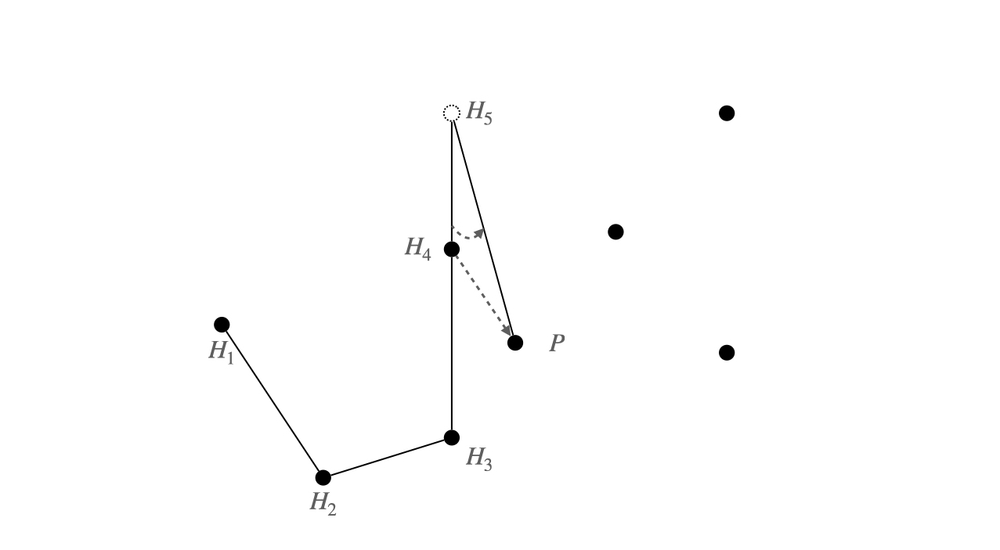
図より、\(H_5\) は候補から除外されます。次に \(H_4\) を調べた結果、\(H_4\) も以下の図より除外されます。いずれも直近 \(2\) つの候補と \(P\) の ccw に注目して判別します。
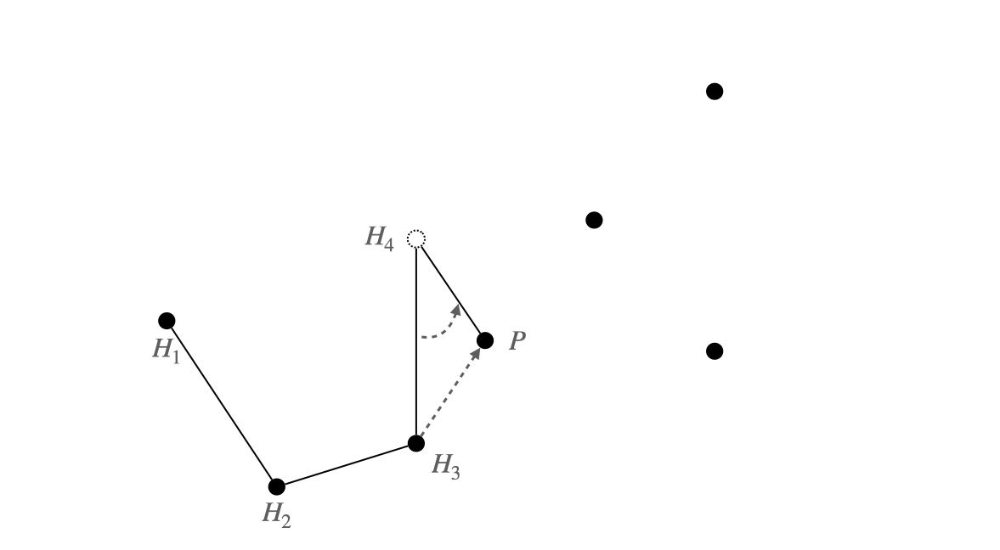
残った点たちはこの時点では下に凸なので、\(H_3\) は凸包の候補としてキープされます。
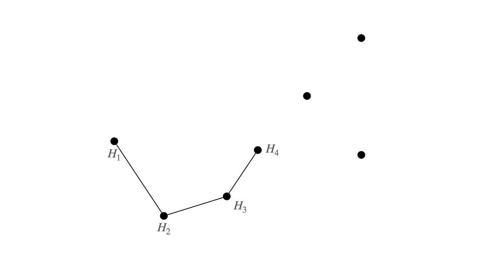
このような手続きを繰り返し、最終的に凸包の下側部分 \(H\) を得ることができます。
またこのとき、\(H\) の点は \(xy\) 座標の辞書順でソートされています。
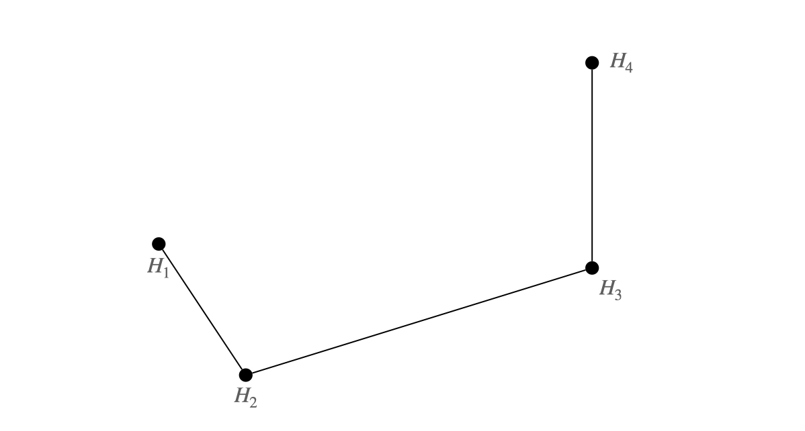
次に、点を \(xy\) 座標の辞書順の逆順でソートして、これと同じことを今度は上側領域に対して行います。今度は候補が上に凸である必要があるという点に注意が必要です。
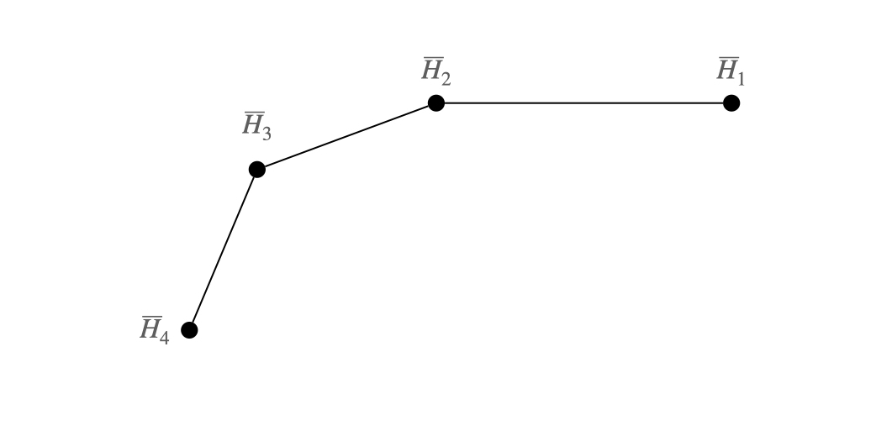
こうして得られた凸包上側の点を \(\overline{H}\) とします。また、\(\overline{H}\) に含まれる点は \(xy\) 座標の辞書順の逆順でソートされています。
なお上側を求める実装は、点の座標全てに \(-1\) をかけることで、下側を求めるアルゴリズムを使い回すことができます。ただし再度 \(-1\) をかけて元に戻す必要があることに注意してください。
これにて、凸包の上下を求めることができました。
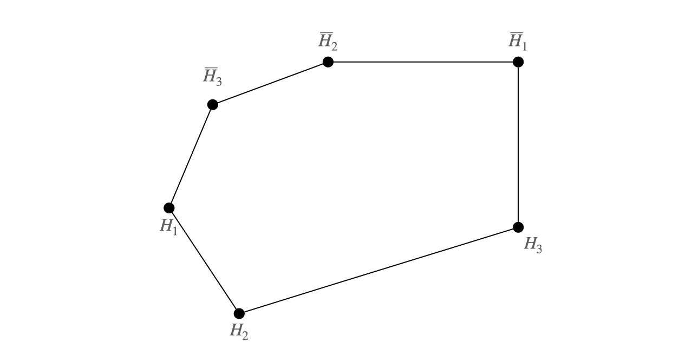
\(H\) の末尾と \(\overline{H}\) の先頭は同じ点であり、\(\overline{H}\) の末尾と \(H\) の先頭も同じ点なので、凸包の頂点は、\(H,\overline{H}\) それぞれの末尾の要素を pop したものを順に連結した列です。また、こうして得られる列は、凸包の頂点を左下の点 (辞書順最小の点) から反時計回りに並べたものです。
多角形の各頂点が与えられるとき、通常は適当な点 \(O\) から時計回り (または反時計回り) の順に与えられます。与えられた点の列を \(P\) とすると、\(P\) において隣接する \(2\) 点間、および \(P\) の先頭と末尾の点の間に多角形の辺が存在します。逆に、これら以外に辺は存在せず、また \(P\) から多角形は一意に定まります。
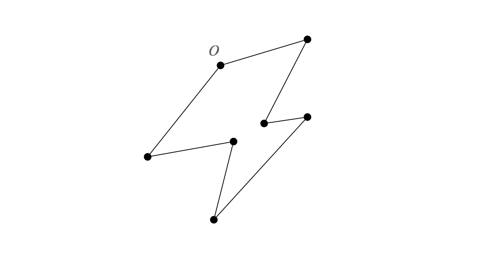
点 \(O\) から移動をはじめ、辺に沿って反時計回りに多角形を一周します。すると、再度 \(O\) に戻るまでに \(|P|\) 回頂点間の移動が行われます。
\(|P|\) 回の移動それぞれについて以下を計算し、それらの総和を計算します。ここで、一度の移動の始点と終点をそれぞれ \(S , T\) とします。
この操作で求めた符号付き面積の総和が、多角形の面積です。図を確認すると、符号付き面積の符号によってうまい具合に各領域の面積が重複しないように加算されていることが確認できます。
今回は反時計回りに調べましたが、時計回りに一周すると面積に \(-1\) をかけた値になります。
平面座標系上に \(2\) つの線分 \(P,Q\) があります。\(P,Q\) に交点が存在するかを判定し、存在するなら答えてください。
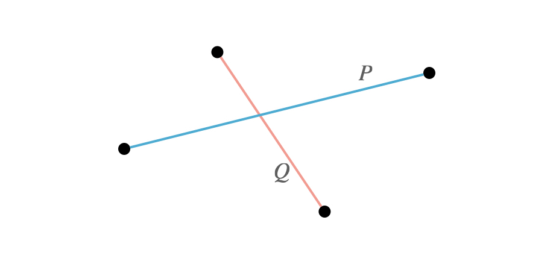
判定の方法は様々ですが、今回は直感的にわかりやすい方法で行います。
まず、コーナーケースとして \(P,Q\) の傾きが等しい場合を処理します。
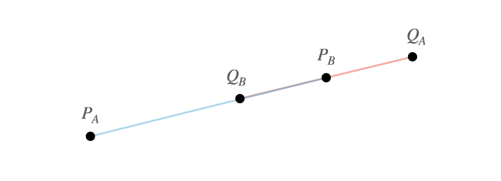
この時、\(P,Q\) の交点が存在することと以下の \(4\) つの条件のいずれかを満たすことは等しいことが言えます。
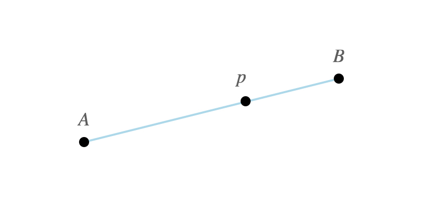
点 \(p\) が線分 \(AB\) 上に存在する条件は、以下の \(2\) つです。
以降、\(P,Q\) の傾きは等しくないことを仮定して話します。
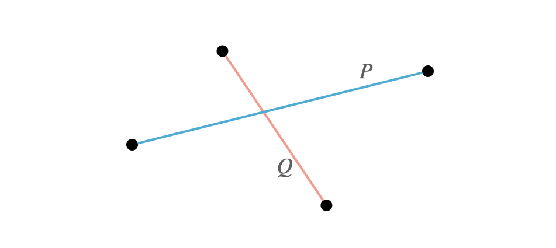
突飛かもしれませんが、線分 \(Q\) のいずれかの端点 (\(Q_A\) とします) が線分 \(P\) のいずれかの端点に重なるように \(Q\) を平行移動してできる平行四辺形を考えます。
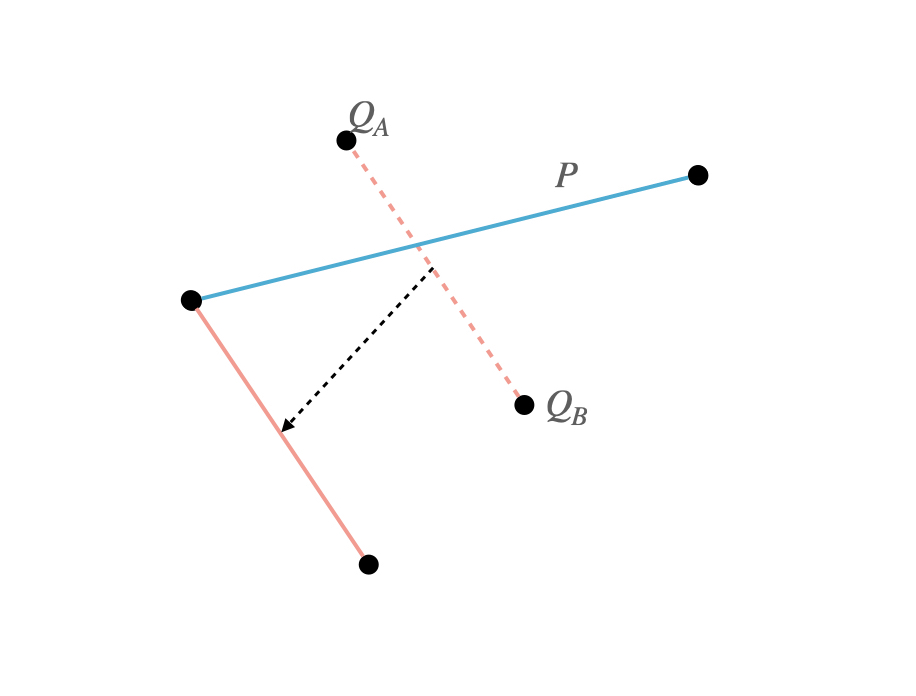
お分かりですか？こうしてできる平行四辺形の辺は、線分\(P,Q\) が交点を持つような \(Q_B\) の境界となっています。
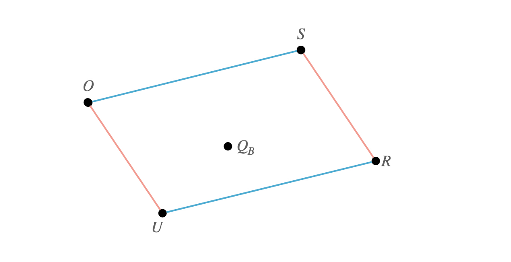
よって、線分 \(P,Q\) が交点を持つ条件は、\(Q_B\) が図の平行四辺形 \(OSRU\) の内部または周上に存在することです。
ある点が多角形の内部に存在するかどうかは、その点と多角形の各辺によって \(3\) 角形を作った時に、それらの \(3\) 角形の面積の総和が多角形の面積と等しくなるかどうかを確かめることで判定できます。
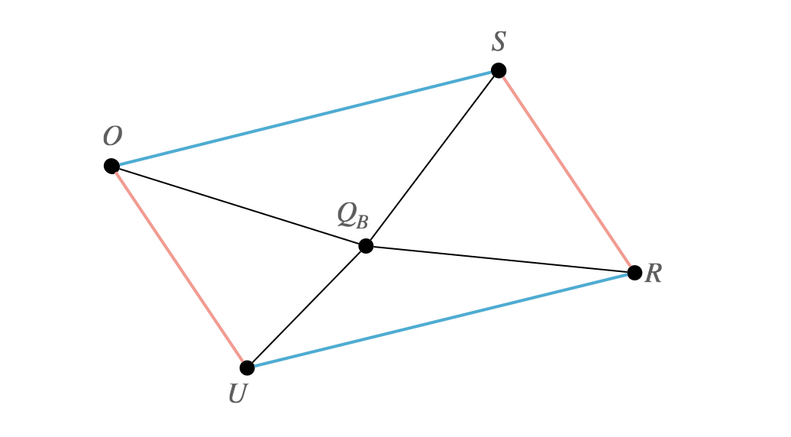
面積の比較を行う際は、 \(3\) 角形の面積の計算であらかじめ面積を \(2\) 倍したものを計算することで誤差をなくすことができます。
これで交点が存在するかどうかの判定はできました。
交点の計算TODO
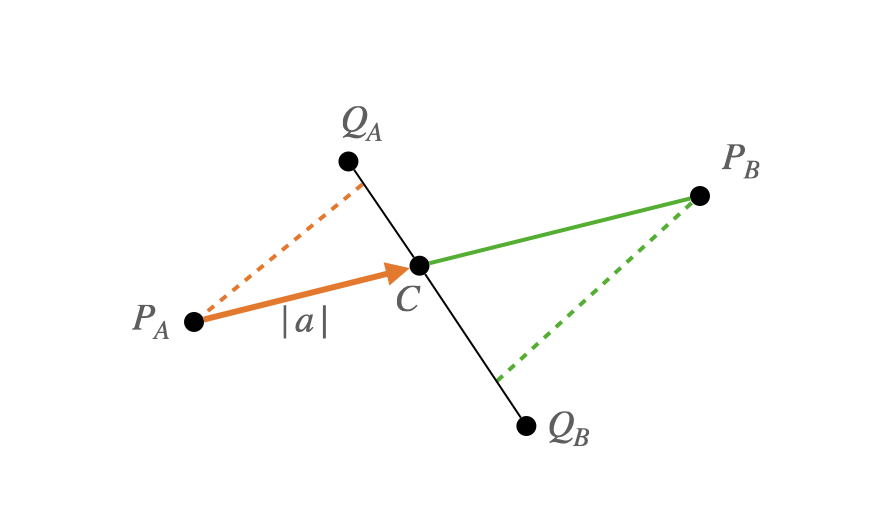